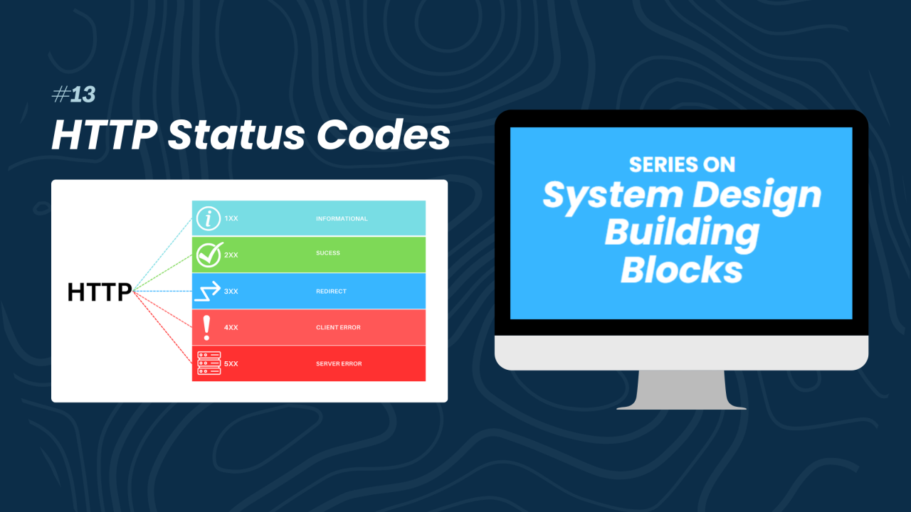

HTTP Status Codes: The Language Between Clients and Servers
Ashmita Pandey · · Backend · Engineering Practices

Hi everyone, I'm Ashmita 👋
Every web developer, whether working on frontend, backend, or full-stack, interacts with HTTP status codes on a daily basis. These three-digit codes returned by the server are essential for understanding the result of any HTTP request. A deep understanding of HTTP status codes helps in debugging, designing APIs, enhancing user experience, and monitoring application health.
This article dives deep into all five categories of status codes, offers real-world examples, and explains their importance in software development.
1xx: Informational Responses
These codes indicate that the server has received the request headers and the client should proceed with the request body or ignore it if already sent.
100 Continue
- Used in situations where the client sends a request body but wants to make sure the server is ready to accept it.
- Example: Uploading a large file in chunks.
101 Switching Protocols
- The server understands and is willing to switch protocols, as requested by the client.
- Example: Upgrading HTTP connection to WebSocket.
103 Early Hints
- Used to preload resources while the final response is still being prepared.
- Example: Preloading CSS/JS files to speed up rendering.
2xx: Successful Responses
Indicates that the client’s request was successfully received, understood, and accepted.
200 OK
- General success status for GET, PUT, POST, DELETE, etc.
- Example: Successfully retrieving user profile data.
201 Created
- Indicates a resource was created as a result of the request.
- Example: Creating a new user via a POST request.
202 Accepted
- The request has been accepted for processing but is not yet completed.
- Example: Submitting a background job.
204 No Content
- The request was successful but there’s no content to send.
- Example: A successful DELETE operation.
3xx: Redirection Messages
Indicates that further action needs to be taken by the client to complete the request.
301 Moved Permanently
- The resource has been permanently moved to a new URL.
- Example: SEO-friendly URL redirects.
302 Found
- Temporary redirect to another URL.
- Example: Redirecting to login page.
304 Not Modified
- Used for caching. The resource has not changed since the last request.
- Example: Loading cached static assets.
307 Temporary Redirect
- Same as 302 but method and body remain unchanged.
- Example: Redirecting API clients temporarily during maintenance.
4xx: Client Error Responses
The server thinks the client has made an error.
400 Bad Request
- The request is malformed.
- Example: Sending invalid JSON in API request.
401 Unauthorized
- Authentication required and has either failed or not been provided.
- Example: Missing API token.
403 Forbidden
- Authenticated but not authorized.
- Example: Regular user accessing admin dashboard.
404 Not Found
- The server can’t find the requested resource.
- Example: Typo in URL or non-existent endpoint.
405 Method Not Allowed
- The method is not supported for the resource.
- Example: Sending DELETE to an endpoint that supports only GET.
409 Conflict
- The request could not be processed because of a conflict.
- Example: Registering with an email that already exists.
429 Too Many Requests
- The user has sent too many requests in a given amount of time.
- Example: Triggering rate limits on a login form.
5xx: Server Error Responses
The server failed to fulfill a valid request.
500 Internal Server Error
- A generic error message.
- Example: Unhandled exception in backend logic.
501 Not Implemented
- The server does not recognize the request method.
- Example: PATCH method not supported.
502 Bad Gateway
- Invalid response from an upstream server.
- Example: Reverse proxy cannot reach the backend.
503 Service Unavailable
- Server is down or overloaded.
- Example: Application down for maintenance.
504 Gateway Timeout
- Upstream server timed out.
- Example: Third-party API response delay.
Best Practices for Using HTTP Status Codes
- Use 2xx codes for successful operations.
- Use 4xx codes to inform users or clients what they did wrong.
- Use 5xx codes to signal server issues and retry logic.
- Avoid using 200 for all responses. Reflect the actual result of the operation.
- Combine with response bodies for better debugging and client handling.
Conclusion
HTTP status codes are not just about debugging. They are essential for communicating clearly between clients and servers, designing clean APIs, handling errors gracefully, and improving the overall developer experience.
Resources:
Thanks for reading!